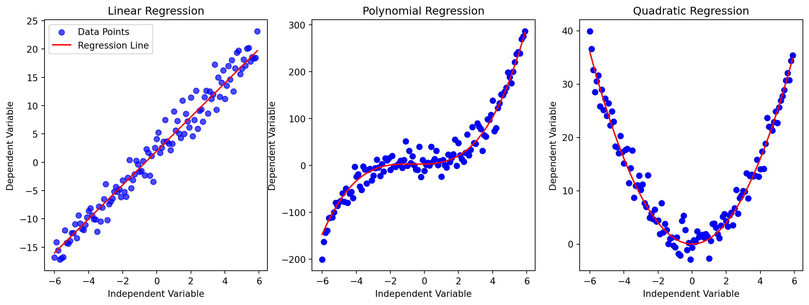
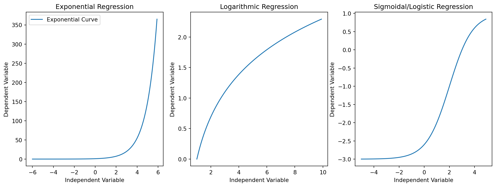
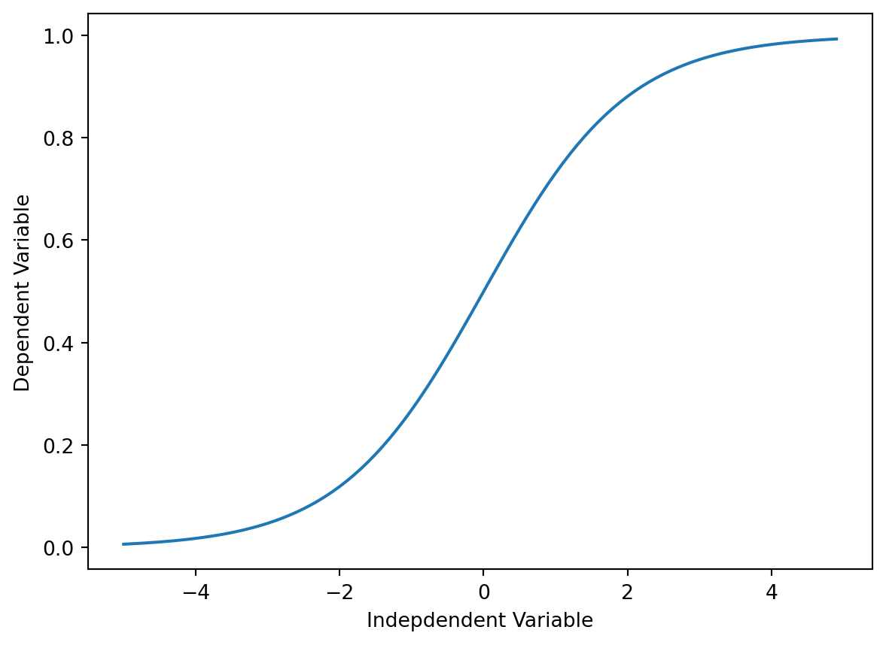

Introduction: In the dynamic world of Machine Learning, where predictions and decisions guide intelligent systems, Regression emerges as a powerful technique for understanding relationships between variables. In this blog, we embark on a journey through the realms of Linear and Non-Linear Regression, exploring their nuances, applications, and the impact they can have on predicting future outcomes. Linear Models: Linear models are characterized by having parameters in linear positions within the equation. The general form of a linear model is expressed as y=a+bx. Here, y is the dependent variable, x is the independent variable, and a and b are the parameters. Linear models can also include additional terms such as cx^2 or b/x, as long as the parameters are in linear positions. Examples of Linear Models: y = a+bx line y = a + bx + cx^2 y = a + (b/x) Let’s start coding :
import numpy as npimport matplotlib.pyplot as plt# First line of plotsplt.figure(figsize=(15, 5))# Plot 1plt.subplot(1, 3, 1)x1 = np.arange(-6.0, 6.0, 0.1)y1 =3* x1 +2y1_noise =2* np.random.normal(size=x1.size)y1_data = y1 + y1_noiseplt.scatter(x1, y1_data, color='blue', alpha=0.7, label='Data Points')plt.plot(x1, y1, color='red', label='Regression Line')plt.ylabel('Dependent Variable')plt.xlabel('Independent Variable')plt.title('Linear Regression')plt.legend()# Plot 2plt.subplot(1, 3, 2)x2 = np.arange(-6.0, 6.0, 0.1)y2 =1* (x2**3) +2* (x2**2) +1* x2 +3y2_noise =20* np.random.normal(size=x2.size)y2_data = y2 + y2_noiseplt.plot(x2, y2_data, 'bo')plt.plot(x2, y2, 'r') plt.ylabel('Dependent Variable')plt.xlabel('Independent Variable')plt.title('Polynomial Regression')# Plot 3plt.subplot(1, 3, 3)x3 = np.arange(-6.0, 6.0, 0.1)y3 = np.power(x3, 2)y3_noise =2* np.random.normal(size=x3.size)y3_data = y3 + y3_noiseplt.plot(x3, y3_data, 'bo')plt.plot(x3, y3, 'r') plt.ylabel('Dependent Variable')plt.xlabel('Independent Variable')plt.title('Quadratic Regression')# Show the first line of plotsplt.show()# Second line of plotsplt.figure(figsize=(15, 5))# Plot 4plt.subplot(1, 3, 1)x4 = np.arange(-6.0, 6.0, 0.1)y4 = np.exp(x4)plt.plot(x4, y4, label='Exponential Curve')plt.ylabel('Dependent Variable')plt.xlabel('Independent Variable')plt.title('Exponential Regression')plt.legend()# Plot 5plt.subplot(1, 3, 2)x5 = np.arange(1.0, 10.0, 0.1)y5 = np.log(x5)plt.plot(x5, y5)plt.ylabel('Dependent Variable')plt.xlabel('Independent Variable')plt.title('Logarithmic Regression')# Plot 6plt.subplot(1, 3, 3)x6 = np.arange(-5.0, 5.0, 0.1)y6 =1-4/ (1+ np.power(3, x6 -2))plt.plot(x6, y6)plt.ylabel('Dependent Variable')plt.xlabel('Independent Variable')plt.title('Sigmoidal/Logistic Regression')# Show the second line of plotsplt.show()


Nonlinear Models: Nonlinear models are characterized by having parameters in nonlinear positions within the equation. The general form of a nonlinear model is expressed as : y=f(X,β)+ε where f is a nonlinear function of the independent variable(s) X and parameters β. Nonlinear models capture more complex relationships, allowing for curves, exponentials, logarithms, and other nonlinear patterns. Examples of Nonlinear Models: 1. y = zx^b 2. y = ae^(bx) 3. y = ae^(k/x)
Code :
import pandas as pdpath='china_gdp.csv'df = pd.read_csv(path)df.head(10)
Year
Value
0
1960
5.918412e+10
1
1961
4.955705e+10
2
1962
4.668518e+10
3
1963
5.009730e+10
4
1964
5.906225e+10
5
1965
6.970915e+10
6
1966
7.587943e+10
7
1967
7.205703e+10
8
1968
6.999350e+10
9
1969
7.871882e+10
Plotting the Dataset This is what the datapoints look like. It kind of looks like an either logistic or exponential function. The growth starts off slow, then from 2005 on forward, the growth is very significant. And finally, it decelerate slightly in the 2010s.
Choosing a model From an initial look at the plot, we determine that the logistic function could be a good approximation, since it has the property of starting with a slow growth, increasing growth in the middle, and then decreasing again at the end; as illustrated below:
X = np.arange(-5,5.0, 0.1)Y =1.0/ (1.0+ np.exp(-X))plt.plot(X,Y) plt.ylabel('Dependent Variable')plt.xlabel('Indepdendent Variable')plt.show()

The formula for the logistic function is the following: IMAGE β1: Controls the curve’s steepness, β2: Slides the curve on the x-axis. Building The Model Now, let’s build our regression model and initialize its parameters.
def sigmoid(x, Beta_1, Beta_2): y =1/ (1+ np.exp(-Beta_1*(x-Beta_2)))return y
Lets look at a sample sigmoid line that might fit with the data:
How we find the best parameters for our fit line? we can use curve_fit which uses non-linear least squares to fit our sigmoid function, to data. Optimal values for the parameters so that the sum of the squared residuals of sigmoid(xdata, *popt) - ydata is minimized. popt are our optimized parameters.
from scipy.optimize import curve_fitpopt, pcov = curve_fit(sigmoid, xdata, ydata)#print the final parametersprint(" beta_1 = %f, beta_2 = %f"% (popt[0], popt[1]))
# split data into train/testmsk = np.random.rand(len(df)) <0.8train_x = xdata[msk]test_x = xdata[~msk]train_y = ydata[msk]test_y = ydata[~msk]# build the model using train setpopt, pcov = curve_fit(sigmoid, train_x, train_y)# predict using test sety_hat = sigmoid(test_x, *popt)# evaluationprint("Mean absolute error: %.2f"% np.mean(np.absolute(y_hat - test_y)))print("Residual sum of squares (MSE): %.2f"% np.mean((y_hat - test_y) **2))from sklearn.metrics import r2_scoreprint("R2-score: %.2f"% r2_score(y_hat , test_y) )
Mean absolute error: 0.02
Residual sum of squares (MSE): 0.00
R2-score: 0.97
Pros of Nonlinear Models: 1. Flexibility: Nonlinear models can represent intricate real-world processes that linear models may fail to capture. 2. Realistic Predictions: They often provide more accurate predictions for complex relationships, such as growth phenomena. Cons of Nonlinear Models: 1. Complex Calculus: Estimating parameters in nonlinear models can involve more intricate and computationally intensive methods compared to linear models. In summary, the key distinguishing factor between linear and nonlinear models is the position of parameters within the equations. Linear models have parameters in linear positions, while nonlinear models have parameters in nonlinear positions, allowing them to represent more complex relationships in real-world processes.
Non-Linear with Linear Regression: Nonlinear regression modeling is akin to linear regression modeling in that both seek to track a particular response from a set of variables graphically. However, nonlinear models are more complex to develop due to the iterative nature of approximations, often involving trial-and-error. Methods like the Gauss-Newton method and the Levenberg-Marquardt method are employed in this process. Identifying Nonlinearity: Regression models that appear nonlinear might be intrinsically linear, and the curve estimation procedure helps identify the nature of functional relationships. Linear regression models can also form curves based on the form of the linear regression equation. Conversely, algebraic transformations can render a nonlinear equation as “intrinsically linear.” Example: One practical example of nonlinear regression is predicting population growth over time. A scatterplot of changing population data may reveal a nonlinear relationship, necessitating the use of a nonlinear regression model. For instance, a logistic population growth model can estimate population for unmeasured periods and predict future growth. Considerations: Variables used in nonlinear regression should be quantitative, and accurate results depend on specifying the relationship between variables accurately. Good starting values are crucial for convergence and obtaining globally optimal solutions. ←code→
Comparison: Linear Regression: Well-suited for linear relationships. Simplicity and interpretability. Limited flexibility in capturing complex patterns. Non-Linear Regression: Accommodates non-linear relationships. Greater flexibility in capturing intricate patterns. May require more data to prevent overfitting. Conclusion: In the diverse landscape of Machine Learning, choosing between Linear and Non-Linear Regression depends on the nature of the data and the underlying relationships. Linear Regression provides a solid foundation for straightforward relationships, while Non-Linear Regression allows for a more intricate exploration of complex patterns. Understanding the strengths and limitations of each technique empowers data scientists to select the right tool for the predictive task at hand, contributing to more accurate and meaningful insights. As we navigate the regression terrain, the synergy of linear and non-linear approaches paves the way for comprehensive modeling and prediction capabilities in the world of Machine Learning.